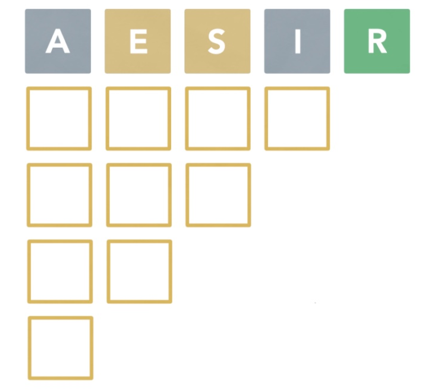
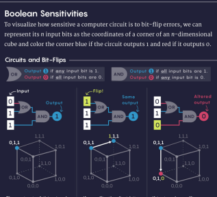
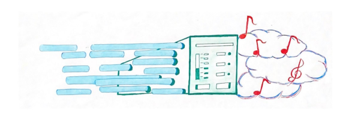
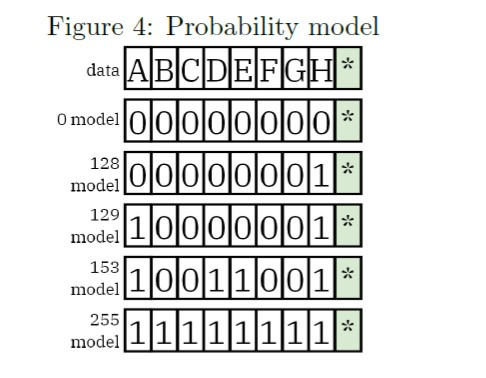

The Official Publication of the Stuyvesant Math and Computer Science Department since 1927
Data Mining
By Han Xiao Continue reading
By Han Xiao Continue reading
WGANs
By Han Xiao Continue reading
By Han Xiao Continue reading
GANs
By Han Xiao Continue reading
By Han Xiao Continue reading
Regressional NLP and Proximal Policy Optimization
By Naowal Rahman Continue reading
By Naowal Rahman Continue reading
How Does AI Audio Generation Work?
By Caden Khuu Continue reading
By Caden Khuu Continue reading
Securing Your CyberSecurity: What is Hacking?
By Aditya Anand Continue reading
By Aditya Anand Continue reading
Bitwise Operators and its Nifty Applications
By Jun Hong Wang Continue reading
By Jun Hong Wang Continue reading
Generative AI: Unleashing Creativity
and Redefining Artistic Expression
By Anastasia Lee Continue reading
By Anastasia Lee Continue reading
Hacking Wordle: A CS Perspective on the Viral Word Game
By Jeremy Ku-Benjet Continue reading
By Jeremy Ku-Benjet Continue reading

Decades-Old Computer Science Conjecture Solved in Two Pages
By Distinguished Guest Contributor, award-winning journalist Dr. Erica Klarreich Continue reading
By Distinguished Guest Contributor, award-winning journalist Dr. Erica Klarreich Continue reading

An Overview of the Algorithms Behind the Internet's Most Popular Audio Codec
By Victor Veytsman Continue reading
By Victor Veytsman Continue reading

Mind Over Matter: Using Artificial Intelligence to Predict the Shape of Proteins
By Ruby Lin Continue reading
By Ruby Lin Continue reading
Crinkler: The Real-World Use
of an Esoteric Compression Algorithm
By Victor Veytsman Continue reading
By Victor Veytsman Continue reading

A* Algorithm: Finding an Optimal Path from Point A to Point B
By Jason Jiang Continue reading
By Jason Jiang Continue reading